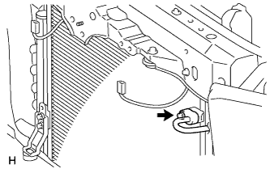
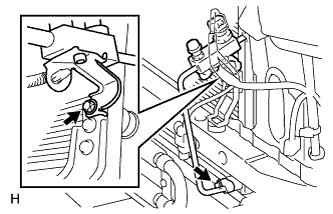
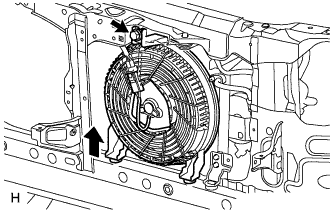
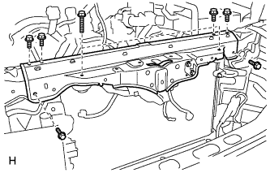
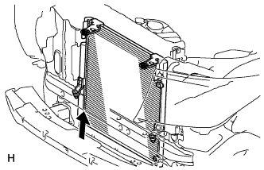
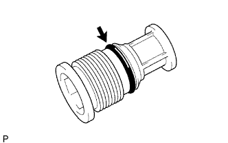

CONDENSER > REMOVAL |
| 1. REMOVE UPPER RADIATOR SUPPORT SEAL |
Remove the 7 clips and radiator support seal.

| 2. RECOVER REFRIGERANT FROM REFRIGERATION SYSTEM |
Start the engine.
Turn the A/C switch on.
Operate the cooler compressor while the engine speed is approximately 1000 rpm for 5 to 6 minutes to circulate the refrigerant and collect the compressor oil remaining in each component into the cooler compressor.
Stop the engine.
Recover the refrigerant from the A/C system using a refrigerant recovery unit.
| 3. DISCONNECT CABLE FROM NEGATIVE BATTERY TERMINAL |
| 4. REMOVE FRONT BUMPER COVER |
for Standard:
Remove the front bumper cover (Click here).
w/ Winch:
Remove the front bumper cover (Click here).
| 5. DISCONNECT NO. 1 COOLER REFRIGERANT DISCHARGE HOSE |
 |
Remove the bolt and disconnect the discharge hose from the cooler condenser.
Remove O-ring from the discharge hose.
| 6. DISCONNECT COOLER REFRIGERANT LIQUID PIPE A |
 |
Remove the 2 bolts and disconnect the liquid pipe A from the cooler condenser.
Remove O-ring from the liquid pipe A.
| 7. REMOVE HIGH PITCHED HORN ASSEMBLY |
Remove the bolt and horn.
Disconnect the horn connector.

| 8. REMOVE LOW PITCHED HORN ASSEMBLY |
Remove the bolt and horn.
Disconnect the horn connector.

| 9. REMOVE SHROUD BLOWER ASSEMBLY (w/ Rear Air Conditioning System) |
 |
Disconnect the connector.
Remove the bolt and shroud blower as shown in the illustration.
| 10. REMOVE TRANSMISSION OIL COOLER AIR DUCT (w/ Air Cooled Transmission Oil Cooler) |
 |
Remove the 4 bolts and transmission oil cooler air duct.
| 11. REMOVE OIL COOLER ASSEMBLY (w/ Air Cooled Transmission Oil Cooler) |
 |
Remove the 4 bolts and oil cooler.
| 12. REMOVE HOOD LOCK SUPPORT BRACE SUB-ASSEMBLY |
 |
Remove the hood lock nut cap.
Remove the 3 bolts, nut and brace.
| 13. REMOVE HOOD LOCK CONTROL CABLE COVER |
 |
Remove the 3 screws.
Detach the claw and remove the cable cover.
| 14. REMOVE HOOD LOCK ASSEMBLY |
 |
Remove the 2 bolts and nut.
Remove the hood lock.
Disconnect the connector.
 |
Disconnect the hood lock control cable.
| 15. REMOVE RADIATOR SUPPORT SUB-ASSEMBLY |
 |
Remove the 8 bolts and radiator support.
| 16. REMOVE COOLER CONDENSER ASSEMBLY |
 |
Remove the cooler condenser as shown in the illustration.
| 17. REMOVE COOLER DRYER |
 |
Using a 14 mm socket hexagon wrench, remove the cap from the modulator.
 |
Remove O-ring from the cap.
 |
Using pliers, remove the cooler dryer.